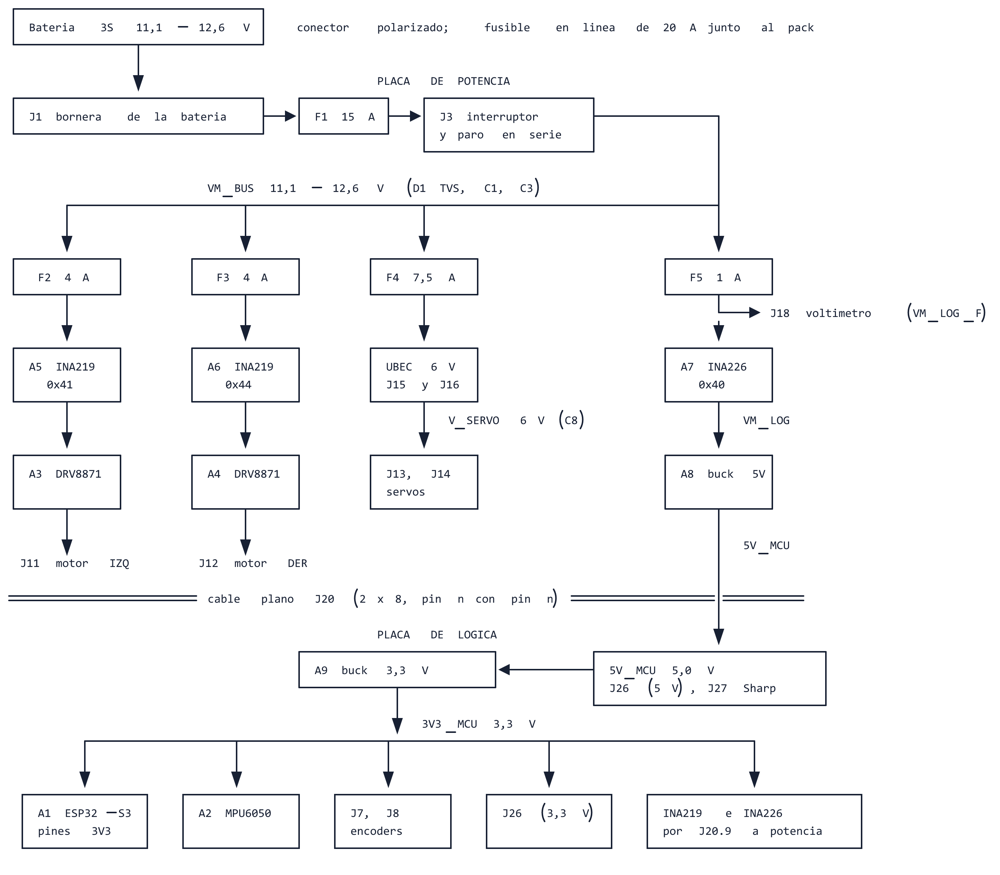
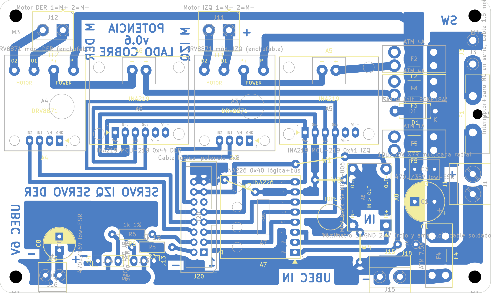
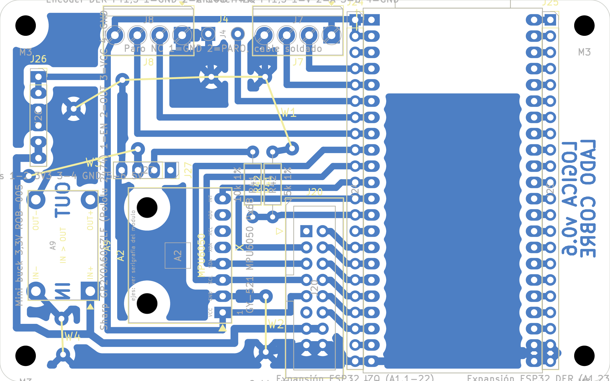

Dos placas caseras de una cara (cobre abajo, componentes arriba) unidas por un cable plano de 16 hilos (J20). Casi todo son módulos comprados; la placa los interconecta y protege. El detalle completo está en placas_v0.6_completo.pdf y en la guía de montaje; los modelos 3D, en fabricacion/rev-0.6/*_3d.step.

124 × 74 mm · 4 agujeros M3 a 4 mm de los bordes, sobre separadores de 10 mm · altura máxima unos 20 mm (DRV8871 en zócalo y portafusible F1) · 27 piezas (6 módulos) y 4 puentes de alambre.

| Conector | Qué va |
|---|---|
| J1 | Batería, por un cable corto con conector polarizado: 1 −, 2 + |
| J3 | Interruptor general y botón de emergencia en serie (pads para soldar) |
| J11, J12 | Motor IZQ, DER: 1 M+, 2 M− |
| J15, J16 | UBEC entrada / salida 6 V: 1 −, 2 + |
| J13, J14 | Servo IZQ, DER: 1 GND, 2 V, 3 señal |
| J18 | Voltímetro: 1 GND, 2 + (pads para soldar) |
| J20 | Cable plano a la lógica, pin n con pin n |
95,25 × 59,6 mm · 4 agujeros M3 a 4 mm de los bordes, sobre separadores de 10 mm · altura máxima unos 15 mm (ESP32 en zócalo); la ESP32 sobresale unos 5 mm del borde superior (antena) y del inferior (USB-C) · 13 piezas (3 módulos) y 4 puentes de alambre.

| Conector | Qué va |
|---|---|
| J4 | Paro hacia la ESP32: con botón de un contacto, puentear con alambre |
| J7, J8 | Encoder IZQ: 1 V, 2 A, 3 B, 4 GND. DER: 1 GND, 2 A, 3 B, 4 V (3,3 V) |
| J27 | Sharp: 1 EN (libre), 2 OUT, 3 VCC 5 V, 4 GND |
| J26 | Sensores nuevos: 1-2 3,3 V, 3-4 GND, 5-6 5 V |
| J24, J25 | Expansión: repiten los pines de la ESP32 |
| J20 | Cable plano a la potencia, pin n con pin n |
| Ref. | Qué es | Para qué está | Polaridad |
|---|---|---|---|
| F1–F5 | Fusibles: 15 A lento, 4 A, 4 A, 7,5 A y 1 A | Uno general y uno por rama: motor IZQ, motor DER, servos y lógica | |
| D1 | TVS SA15A (o P6KE18A) | Absorbe los picos de tensión de los motores | Banda hacia VM_BUS |
| C1 | 470 µF 35 V low-ESR | Reserva de energía para los motores (lo pide el DRV8871) | Electrolítico |
| C3 | 10 µF 50 V cerámico | Lo pide la ficha del BMS | |
| C8 | 470 µF 16 V low-ESR | Reserva de energía para los servos | Electrolítico |
| R5, R6 | 1 kΩ | Protegen la ESP32 si un servo se enchufa corrido | |
| R41, R42 | 10 kΩ y 15 kΩ, 1 % (lógica) | Bajan la salida del Sharp (hasta 3,6 V) a lo que acepta la ESP32 |
| Resistencias | 1 kΩ ×2, 10 kΩ 1 % ×1, 15 kΩ 1 % ×1 |
| Capacitores | 470 µF 35 V low-ESR (Ø10), 470 µF 16 V low-ESR (Ø8), 10 µF 50 V cerámico |
| TVS | SA15A (o P6KE18A) |
| Fusibles | Portafusible ATO + fusible 15 A lento; 4 portafusibles mini + fusibles de 4 A ×2, 7,5 A y 1 A; portafusible en línea + fusible de 20 A |
| Conectores | Borneras de 2 polos a 5,08 mm ×4 y a 3,5 mm ×1; de 4 polos a 3,5 mm ×2; IDC macho 2×8 con caja ×2; tira hembra 1×40 ×5; tira macho 1×40 ×1; conector polarizado para la batería (ya lo tienen) |
| Cables | Plano de 16 hilos + 2 IDC hembra 2×8; 1,5 mm² rojo y negro; Dupont de 4 hilos para el Sharp |
| Mando | Interruptor general y botón de emergencia con traba, los dos de 15 A o más en continua |
| Fabricación | 2 placas vírgenes de una cara; alambre estañado de 0,6 mm; 8 separadores M3 de 10 mm con tornillos |
Seguir cada línea sobre la vista de cobre (o con el multímetro en la placa atacada) y marcarla.